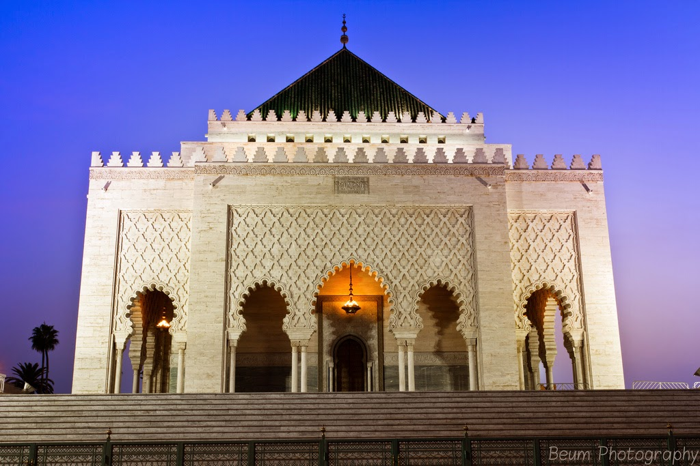
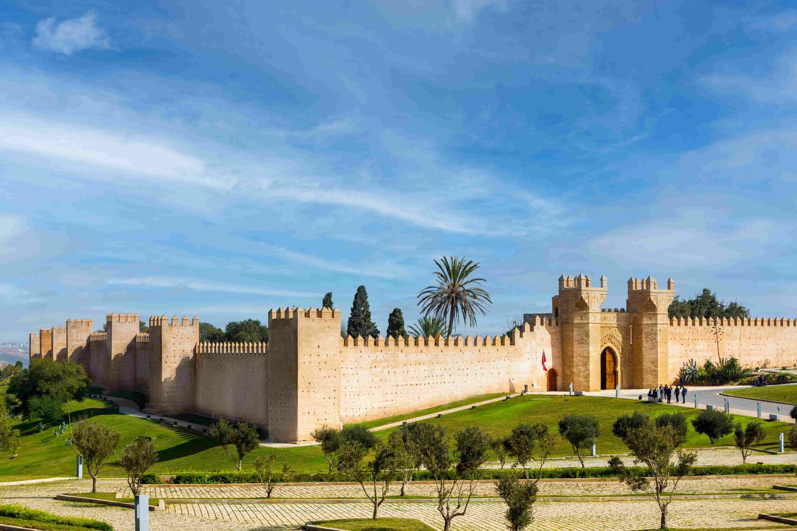
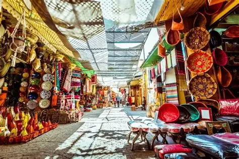
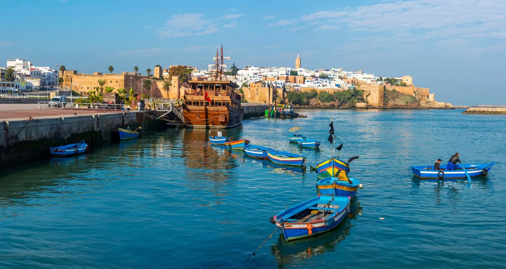

DÉCOUVERTES
À ne pas manquer à Rabat

Kasbah des Oudayas
Forteresse andalouse du XIIe siècle dominant l'embouchure du Bou Regreg. Jardins, ruelles blanches et bleues.

Tour Hassan
Minaret inachevé du XIIe siècle entouré de colonnes. L'un des monuments les plus emblématiques du Maroc.

Mausolée Mohammed V
Mausolée royal en marbre blanc face à la Tour Hassan. Architecture hispano-mauresque d'une grande finesse.

Site archéologique de Chellah
Ancienne cité romaine et nécropole mérinide entourée de jardins sauvages. Réputé pour sa sérénité.

Médina de Rabat souk
Souks animés, artisanat local et architecture traditionnelle dans une médina moins fréquentée que d'autres.

Corniche de Rabat
Promenade face à l'Atlantique, idéale en fin de journée pour observer la lumière sur l'océan.